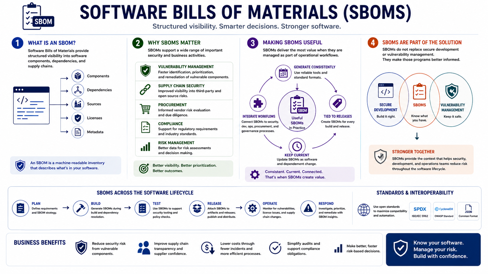

What Is SBOM?
Course Summary
Connecting to LMS... Progress: in progress
Version 1.0 | Date: 2026-06-16 | Educational overview of Software Bill of Materials concepts.

Narration
Software Bills of Materials provide structured visibility into software components, dependencies, and supply chains.
SBOMs support vulnerability management, supply chain security, procurement, compliance activities, and risk management decisions.
They are most useful when generated consistently, tied to software releases, kept current, and integrated with operational workflows.
SBOMs do not replace secure development or vulnerability management. They make those programs better informed.